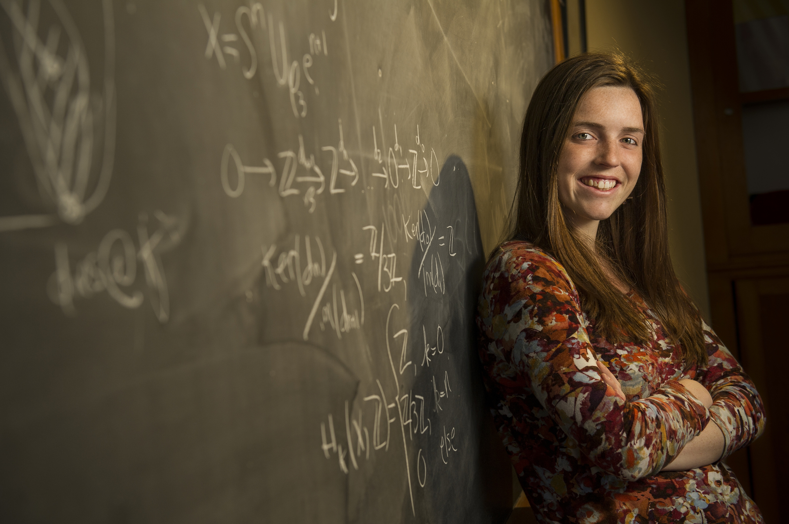

Hello! I recently graduated with a Ph.D. in Mathematics from Montana State University (MSU). I was advised by Dr. Tomas Gedeon and worked on problems in Applied Topology. Starting in July, I will be a postdoc at Smith College. My pronouns are she/her.
My research interests are in topological data analysis (TDA), computational topology and geometry, directed topology, network science, and mathematical biology.
Links: CV. google scholar. linkedin.
My email is rbelton@smith.edu